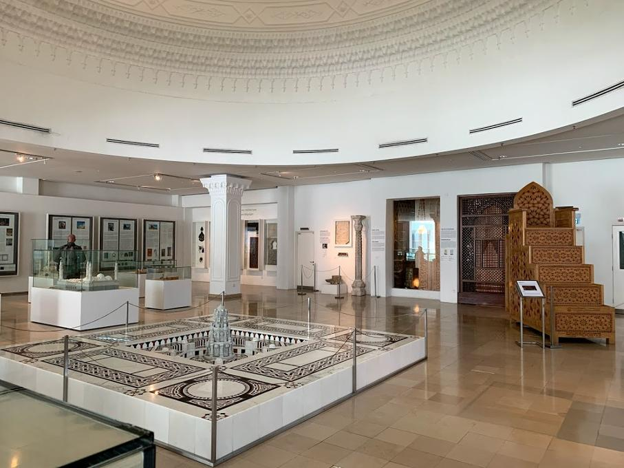

News
Read the latest news on IAMM as reported in the media.
Home
About
Galleries
Exhibition
Contact
Education
Facilities
News
Moza Restaurant
Home
>
News
News
19 December 23
IAMM 25th Anniversary
19th December 2023: In celebration of our 25th anniversary, we are pleased to share media coverage featuring the A Journey through Islamic Art and Alif Lam Ra Exhibitions, culminating on 12th December, 2023.
Captivating Exhibition Unravels Mystique of Arabic Calligraphy - NST
Another Proud Milestone: Islamic Arts Museum Celebrates 25 - NST
News from Bernama
A Journey through Islamic Art - Santa Channel
Celebrating the Richness of Islamic Art - Malay Mail
Historical Attractions at IAMM - Bharian
Weekend for the Arts: Tinariwen Brings Desert Heat - The Star
Photo Gallery of the Launch Event - PMO
Strengthening Islamic Art and Culture - The Star
Anwar: Strengthening Islamic Art and Culture - Malay Mail
IAMM's 25 Years of Celebrating Islamic Heritage - Southeast Asian Archaeology
A Canvas of Faith and Splendour - The Star
PM Calls for Enhancement of Islamic Arts and Culture - Bernama
Cultural Art Strengthening under Malaysia Madani Concept - Astro Awani
Celebrating Islamic Arts and Culture - Malaysia Gazette
Majlis Sambutan Jubli Perak 25 Tahum Muzium Kesenian Islam Malaysia
PM hopes conglomerates will support development of the arts
Muzium Kesenian Islam Malaysia | MHI (3 Jun 2023)